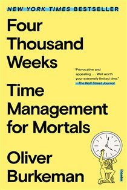

Library › Productivity
Four Thousand Weeks — Summary & Key Lessons

Time management for mortals — you get ~4,000 weeks; stop trying to do everything and start choosing what to neglect.
📖 OPEN THE FULL INTERACTIVE BREAKDOWN →🌐 Read it in Hindi, Hinglish, Gujarati, Tamil & 22 more languages — free, with audio.
💡 The Big Idea
An average life is about 4,000 weeks — absurdly, terrifyingly short. Burkeman's heresy against the productivity industry: the problem isn't inefficiency, it's DENIAL — every system promising you'll 'get on top of it all' feeds the fantasy of limitlessness, and efficiency BACKFIRES (answer email faster → receive more email; the better you get, the more gets asked: the 'efficiency trap'). Sanity starts with accepting finitude: you will NEVER do it all, so the real skill is choosing what to NEGLECT — 'the joy of missing out': every yes is a thousand nos, and that's not the tragedy, that's the meaning (a choice matters only because it costs the alternatives). His tools: PAY YOURSELF FIRST with time (do the important thing first; there is no 'later' — later is where dreams are stored until they expire), LIMIT WORK IN PROGRESS (three projects max; everything else waits in line, not in your head), embrace STRATEGIC MEDIOCRITY at the unimportant, resist the 'causal catastrophe' of treating the present as mere prep for the future (the last time your life felt real, you were paying attention, not optimizing), and practice patience as power: problems yield to time-in, not intensity. Rest that must be 'earned' by completion never arrives — rest anyway.
🧠 The 6 Key Lessons
Lesson 1: The Efficiency Trap: Faster Just Fills Faster
Chapters 1-3
The promise: get efficient, clear the backlog, then finally live. The reality: capacity attracts demand — inbox-zero people receive more email (they reply fast, so more comes), the reliable colleague gets more assignments, the optimized parent adds more activities. Work expands not just to fill time (Parkinson) but to fill CAPABILITY. Burkeman's conclusion: 'getting on top of everything' is structurally impossible, and every hour spent optimizing the unimportant is subsidized by the important. The escape isn't better systems — it's the courage to leave the unimportant undone, permanently and on purpose: strategic neglect as a first-class productivity tool.
📖 Example: Burkeman's own confession — a decade as the Guardian's productivity columnist, trying EVERY system (GTD, pomodoro, inbox zero) — each worked briefly, then the volume adjusted upward and the anxiety returned, because the systems all served the same lie: that… Read the full example →
⚡ Do this: Write your 'strategic neglect list': three things you're officially bad at from now on (fast email replies, a spotless inbox, certain meetings, keeping up with X). Announce one of them to the people it affects — neglect chosen out loud stops being guilt.
Lesson 2: Pay Yourself First — and Cap Work in Progress
Chapters 4-7
Everyone plans to do the meaningful thing (the novel, the business plan, the workout) AFTER clearing the urgent — and the urgent never ends, so 'after' is a mythical country. Flip it: give the first hour to what matters, before the world submits its claims; treat it like rent, not dessert. Companion rule: LIMIT WORK IN PROGRESS to three active projects — humans in denial of finitude keep ten half-open (each a comforting fantasy of future completion); capping forces the painful, honest question 'which three actually matter now?' and converts anxiety-inventory into finished work. Third: resist MIDDLING PRIORITIES — Buffett's apocryphal list method (circle 5 of 25 goals; the other 20 become the AVOID list) exists because near-priorities are the most dangerous: attractive enough to consume your life, unimportant enough to waste it.
📖 Example: The cautionary case Burkeman keeps returning to: people who deferred the meaningful — the professor with the book 'after tenure paperwork,' the father with the trips 'after this busy season,' every 'when things calm down' plan — discovering across decades… Read the full example →
⚡ Do this: For the next two weeks: your most important project gets the FIRST 60-90 minutes of every workday — before email, before messages. And list every open project; pick three; write the rest on a 'waiting, deliberately' list that lives outside your head.
Lesson 3: The Presence Problem: Stop Living in the Next Moment
Chapters 8-14
The deepest trap isn't wasted time — it's INSTRUMENTALIZED time: treating every present moment as a stepping stone (working for the weekend, parenting for the milestones, walking for the step count), which postpones aliveness indefinitely since the future, on arrival, becomes another stepping stone. Burkeman's counters: practice ATELIC activities — things with no goal beyond themselves (hobbies you're mediocre at are spiritually elite: the point survives the incompetence); accept the DISCOMFORT of presence (boredom is withdrawal symptoms from distraction; sit through it and attention returns); use patience as a superpower (hard problems — research, craft, relationships — yield to consistent time-in-the-chair across months, not heroic sprints: 'stay on the bus' — the Helsinki bus theory: every route starts identical; originality begins past the stops where imitators got off); and let REST be unearned — the completion-condition ('I'll relax once everything's done') is unmeetable by design. Four thousand weeks is enough for a meaningful life; it was never going to be enough for an unlimited one — and that's the deal that makes any of it matter.
📖 Example: The Helsinki bus metaphor (photographer Arno Minkkinen) Burkeman canonizes: all buses out of Helsinki station share the same first stops — young photographers shoot their 'derivative' early work, panic, hop off, restart on another route... which shares ITS… Read the full example →
⚡ Do this: Adopt one atelic practice this month — something you'll be bad at with zero improvement plan (sketching, an instrument, aimless walks without a podcast). Protect 2 hours weekly. When the urge to optimize or quit arrives, that's the exercise working.
Lesson 4: Cosmic Insignificance Therapy: The Liberation of Not Mattering
Chapters 12-14: The Human Disease
Burkeman's final medicine is the strangest: you are one of 100+ billion humans who have lived; in two generations, almost no trace of your work will persist — and this is GOOD NEWS. The oppressive weight most ambitious people carry ('my life must be remarkable, my work must matter historically') is a standard no human life has ever actually met, and measuring your 4,000 weeks against cosmic significance guarantees they feel like failure regardless of content. Cosmic insignificance therapy inverts it: released from mattering to history, you're free to matter to the ACTUAL scale of a human life — the meal cooked well, the friend shown up for, the work done with care for the fifty people it genuinely touches. His companion practices: the LAST-TIME meditation (many joys are experienced a final time without announcement — some day you already carried your child for the last time; awareness converts routine into ceremony), DECIDING problems are permanent (life IS a series of problems; the fantasy of a future problem-free state is the thief of the only life available — 'the problems are the life'), and letting the present be COMPLETE: this moment isn't a rehearsal, an obstacle, or an investment — it's the show, already running, attendance optional.
📖 Example: Burkeman's telling of the research scientist's crisis: a brilliant academic paralyzed for years by choosing projects 'significant enough' to justify her talent — until a mentor asked what she'd research if she accepted being 'a mediocre footnote, like the… Read the full example →
⚡ Do this: Write the sentence: 'My life will be forgotten, and it still counts because ___' — finish it with things at human scale (people, days, craft), not historical scale. Then do one last-time meditation this week: pick a routine involving someone you love and experience it as potentially the final instance. Notice what attention does to an 'ordinary' moment.
Lesson 5: The Productivity Trap: You'll Never Get It All Done — and That's the Point
Part 1: The Trap
Burkeman's opening assault on productivity culture: the entire project of 'getting everything done' is a trap, because the demands on your time are infinite while your weeks are finite — so the feeling of being behind is not a bug to fix but the permanent condition of being human. Every efficiency gain doesn't create free time; it raises the bar for what 'enough' means. The liberating move is to stop treating the backlog as a problem and start treating it as the reality: you are always going to be behind on something, and that's okay. The only meaningful question is not 'how do I get more done?' but 'which problems am I choosing to have?' — because a finite life is an infinite series of trade-offs, and the trade-offs are the life.
📖 Example: Burkeman describes how the feeling of being overwhelmed isn't solved by better tools — the people with the best productivity systems are often the most anxious, because their systems simply let them commit to even more. The exhaustion isn't from doing too… Read the full example →
⚡ Do this: Accept the backlog: write down everything 'pending' and mark 20% of it as permanently un-doable this year. Feel the relief, then choose what the freed attention goes to.
Lesson 6: The Patience to Let Things Be: Choosing to Do Nothing Is Still a Choice
Part 3: The Practice
Burkeman's counterintuitive productivity advice: the most underrated skill is the ability to let things remain unfinished, unresolved and undecided — because rushing every loop to 'done' is how people mistake activity for progress. His practice of 'quiet quitting' on the impossible, of allowing emails to age, of letting a decision marinate without anxiety, creates the space where the important work can actually breathe. The deeper point: attention is the only real currency, and it's drained not just by doing but by the constant mental churn of incomplete loops. Choosing to deliberately NOT engage — the half-read book, the unanswered question, the dormant project — is a conscious allocation, not failure. Sometimes the most productive thing is to let time do the deciding.
📖 Example: Burkeman describes how, when he stopped trying to clear his inbox every day, the urgent emails sorted themselves: most resolved without him, and the few that mattered surfaced naturally. The non-action wasn't neglect; it was the discovery that the system had… Read the full example →
⚡ Do this: This week, deliberately leave one thing unfinished — an email, a task, a decision — and observe what happens when you let it age. Record whether it resolved itself or revealed its true importance.
✅ 5-Step Action Plan
- Write and announce your strategic-neglect list — choose what you're officially bad at.
- Pay yourself first: the meaningful project gets the day's opening hour.
- Cap work-in-progress at three; park the rest on a written waiting list.
- Circle 5 of your 25 goals; treat the other 20 as the avoid-at-all-costs list.
- Keep one gloriously pointless hobby — and stay on the bus.
💬 Best Quotes from Four Thousand Weeks
- “The average human lifespan is absurdly, terrifyingly, insultingly short.”
- “The day will never arrive when you finally have everything under control.”
- “Missing out is what makes our choices meaningful in the first place.”
Interactive version: mark lessons as read, listen in your language, share quote cards.